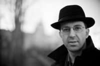

Josef Straka se narodil 1. prosince 1972 v Jablonci nad Nisou a je autorem dvou básnických sbírek a…jiné časy (G Tisk, Liberec) a Proč. (edice Tvary, TVAR, Praha), které vydal v devadesátých letech, a čtyř knih básnicko-prozaických textů: Hotel Bristol (2004), Město Mons (2005), Kostel v mlze (2008), v září 2014 vyšla zatím poslední kniha Malé exily, všechny v nakladatelství Cherm, Praha-Zbraslav.
Své texty uveřejnil též ve sborníku Městské knihovny v Praze Vzorník 2013 a v Pražské říční antologii s názvem Dryák ředěný Vltavou / A Giant Barrel of Rotgut, vydala rovněž Městská knihovna v Praze. Antologie vyšla v srpnu 2016, dvojjazyčně, překlady jeho textů do angličtiny pořídil David Vichnar.
Dále publikoval v mnoha literárních a kulturních, domácích i zahraničních časopisech a antologiích a jeho texty byly přeloženy do angličtiny, němčiny, polštiny, srbštiny, slovinštiny, nizozemštiny, maďarštiny, rumunštiny, ruštiny, španělštiny, portugalštiny a bulharštiny. Nyní se jeho texty překládají do francouzštiny.
Zúčastnil se několika mezinárodních básnických festivalů a autorských čtení doma i v zahraničí, například v Krakově, Varšavě, festivalu Treci Trg v Bělehradě 2008, festivalu Smederevský básnický podzim (Srbsko) 2009, International Prague Microfestival (v letech 2011, 2012 a 2013). Četl v rámci předprogramu nizozemského mezinárodního festivalu City2Cities, Praha, březen 2012. V dubnu roku 2013 měl svůj samostatný večer na české ambasádě v Berlíně a též čtení na univerzitě v Žitavě v Německu. V roce 2014 se v Berouně zúčastnil mezinárodního básnického festivalu Stranou a v říjnu téhož roku byl opět hostem 45. ročníku mezinárodního básnického festivalu v srbském městě Smederevo – Smederevský básnický podzim. V říjnu 2016 se zúčastnil mezinárodního knižního a literárního festivalu Transilvania International Book Festival v rumunském městě Kluž a následně četl na dvou večerech v Bukurešti. V červnu roku 2017 hostem mezinárodního básnického festivalu Di/Verse. The Poetry Encounter in Mexico City.
V letech 2000–2008 pracoval, a od podzimu 2015 znovu pracuje v redakci časopisu Weles. Od léta roku 2009 spolupracuje s literárně-kulturním časopisem H_aluze. Od roku 2008 organizuje a moderuje literární večery a diskuze v rámci mezinárodní festivalu Den poezie a od roku 2010 organizuje literární a vzdělávací večery a autorská čtení v Domě čtení Městské knihovny v Praze.
V roce 2013 se podílel na organizování básnických večerů a literárních diskuzí v rámci doprovodného programu mezi-národního knižního veletrhu a literárního festivalu Svět knihy Praha. Od léta 2013 též organizuje a moderuje literární večery na lodi Avoid Floating Gallery na náplavce pod pražskou Výtoní. Dále připravuje a uvádí literární akce v pražské kavárně Liberál a na jiných místech v Praze, ale též v Liberci nebo Českém Krumlově.
Původní profesí je psycholog se zaměřením na kritickou ekonomickou psychologii a zabývá se různými aspekty kvality života a pomalostí. Příležitostně přednáší, například v rámci artefiletických kurzů či na konferencích zaměřených na kvalitu života.